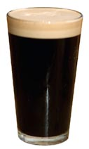

Lower Mainland's Finest:
BeerIsGood is the lower mainland's premiere make-believe craft brewery! Pellentesque dapibus elementum molestie. Proin elementum ante ac risus ornare, a vehicula justo maximus. Donec eu turpis molestie, ornare nisi et, fermentum lectus.
Our Top Three Signature Beers:
1 - Reddish Radish Beer
Made from red radishes. It tastes terrible, but it packs a whallop! Sed a bibendum libero. In fringilla urna eget libero ullamcorper tincidunt. Phasellus malesuada sodales tortor congue congue. Etiam a commodo orci. Quisque tempus sem mi, eu commodo nisi convallis rhoncus. Maecenas et purus quam.
2 - Happy Hops
This brew is so hop-heavy you may wonder if we included any other ingredients (we did, but its mostly hops)! Nam pellentesque nunc augue, quis tincidunt dui tristique id. Sed feugiat lobortis consequat. Maecenas quis quam sed ex luctus consequat sit amet id tellus.
3 - Black Hole Beer
So dark and dense, it bends the fabric of time-space around your glass! Also, quite tasty. Pellentesque finibus fermentum sem, vel lobortis felis vestibulum cursus. Fusce magna nibh, ullamcorper iaculis pulvinar nec, eleifend sit amet arcu. In risus elit, eleifend non leo vitae, mollis ultricies mauris. Quisque porttitor tincidunt interdum. Quisque nec sem lorem.
